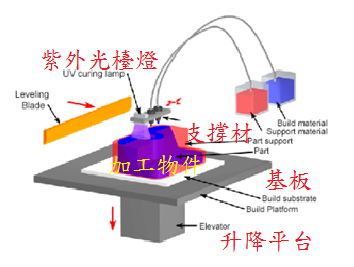

製造過程分為以下幾個步驟 :
- 使噴頭(print head)位於升降平台上方。
- 藉由加熱或壓電的方式(thermal or piezoelectric method)，材料液滴從噴頭射出，沉積到基板(substrate)表面。
- 材料液滴固化，製造出第一層。
- 依此類推，藉由後層液滴沉積在前層的方式，依次建構出第二層、第三層...。
- 每一層硬化方式包含:自然冷卻硬化或照射紫外光固化。後處理時必須去除支撐材料(support material)。

圖一 液態法_材料噴塗
表格比較
| Typical | Feasible | |
|---|---|---|
| Shapes: | ||
| Part size: | ||
| Materials: | ||
| Surface finish - Ra: | ||
| Tolerance: | ||
| Max wall thickness: | ||
| Quantity: | ||
| Lead time: | ||
| Advantages: | ||
| Disadvantages: | ||
| Applications: | ||
Disclaimer: All process specifications reflect the approximate range of a process's capabilities and should be viewed only as a guide. Actual capabilities are dependent upon the manufacturer, equipment, material, and part requirements.